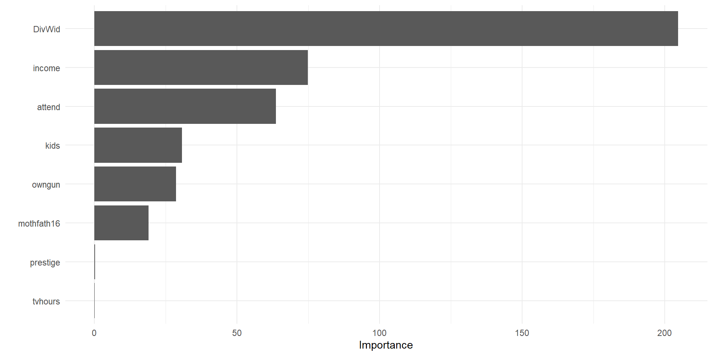

Presentation modeles de prediction
Pierre Dumont Roty et Emmanuel Paguiel
Sommaire
- Présentation des données
- Analyse descriptive
- Présentation des différents modèles construits
- Choix du meilleur modèle
- Conclusion
Présentation de la base de donnée
Base de données happiness du package woolridge
Base de données initial
- 17 000 observation
- 33 variables
Base de donnée transformé
- 15 000 observations * 15 variables
- Les NA non imputés deviennt des modalités
Variable à prédire
Type des variables
| Variable | p_value |
|---|---|
| prestige | 2.580623e-30 |
| attend | 2.695427e-57 |
| tvhours | 3.944384e-01 |
| kids | 1.842951e-22 |
| Variable | p_value |
|---|---|
| Statut professionnel | 0.0000 |
| Revenu | 0.0000 |
| Région | 0.0246 |
| Possession d'arme | 0.0000 |
| Identifié comme noir | 0.0000 |
| Sexe (Femme) | 0.7183 |
| Chômage 10 ans | 0.0000 |
| Divorcé / Veuf | 0.0000 |
Modèles construit
Prérequis
Découpage :
- 3/4 sont pour les données d’entrainement
- 1/4 sont pour les données test
- 50% de l’échantillon si modèle trop lourd
Prérequis
Recettes
Prérequis
Paramètres
Prérequis
Metrics
- La metric prise sera “ROC AUC”
- Classe légérement déséquilibré
- Facilement représentable dans les modèles
Modèle Linear Discriminant Analysis
Spécification
Optimisation des hyper paramètres
Matrice de confusion
Prédiction
|
|||
|---|---|---|---|
| Réalité | N vhappy | vhappy | Total |
| N vhappy | 2508 | 122 | 2630 |
| vhappy | 1108 | 169 | 1277 |
| Total | 3616 | 291 | 3907 |
Le taux de bonne prédiction est à 68.52%
Resultat
Area under the curve: 0.6743Modèle QDA
Spécification
Matrice de confusion
Prédiction
|
|||
|---|---|---|---|
| Réalité | N vhappy | vhappy | Total |
| N vhappy | 849 | 1781 | 2630 |
| vhappy | 209 | 1068 | 1277 |
| Total | 1058 | 2849 | 3907 |
Resultat
Area under the curve: 0.6542Modèle knn
Spécification
Test des hyper paramètres

Resultat
Area under the curve: 0.6187Modèle SVM linéaire
Ne contient que 50% de l’echantillon d’observation par soucis de modélisation
Spécification
Resultat
Area under the curve: 0.5314
Modèle SVM radiale
Ne contient que 50% de l’echantillon d’observation par soucis de modélisation
Workflow
Spécification
Optimisation des paramètres

Resultat
Area under the curve: 0.5078Modèle Arbre CART
Spécification
arbre_mod <- decision_tree() |>
set_engine("rpart") |>
set_mode("classification") |>
set_args(
cost_complexity = tune(),
tree_depth = tune()
)
arbre_grid <- grid_regular(
cost_complexity(range = c(-15, -0.1)),
tree_depth(range = c(1, 10)),
levels = 10
)
arbre_wf <- workflow() |> add_model(arbre_mod) |>
add_recipe(rec)Tune du cout de compléxité
Paramètres finaux
Importance des variables
Matrice de confusion
Truth
Prediction no yes Sum
no 2455 974 3429
yes 236 243 479
Sum 2691 1217 3908Arbre CART
Courbe ROC
Area under the curve: 0.6367Estimation des métrique
# A tibble: 6 × 3
.metric .estimator .estimate
<chr> <chr> <dbl>
1 accuracy binary 0.690
2 ppv binary 0.716
3 sens binary 0.912
4 f_meas binary 0.802
5 kap binary 0.134
6 roc_auc binary 0.363Modèle Random Forest
Spécification
# Définition du modèle Random Forest avec importance des variables
rf_spec <- rand_forest() |>
set_engine("ranger", importance = "impurity") |> # Activé pour analyser les variables
set_mode("classification") |>
set_args(trees = tune(), min_n = tune()) # Optimisation du nombre d'arbres et min_n
# Combinaison du modèle et de la recette
rf_wf <- workflow() |>
add_model(rf_spec) |>
add_recipe(rf_recipe)
# Définition de la grille aléatoire
rf_grid <- grid_random(
trees(range = c(500, 1000)),
min_n(range = c(5, 20)),
size = 20
)
# Validation croisée pour tester le modèle
data_cv <- vfold_cv(train_data, v = 5, strata = vhappy)Optimisation des hyperparamètres
rf_spec <- rand_forest() |>
set_engine("ranger", importance = "impurity") |> # Activé pour analyser les variables
set_mode("classification") |>
set_args(trees = tune(), min_n = tune()) # Optimisation du nombre d'arbres et min_n
rf_wf <- workflow() |>
add_model(rf_spec) |>
add_recipe(rf_recipe)
rf_tune_res <- tune_grid(
rf_wf,
resamples = data_cv,
grid = rf_grid,
metrics = metric_set(accuracy)
)
# Identification des meilleurs hyperparamètres
best_params <- rf_tune_res |>
select_best(metric = "accuracy")
# Finalisation du workflow avec les meilleurs paramètres
rf_final_wf <- rf_wf |>
finalize_workflow(best_params)
# Ajustement du modèle avec les meilleurs hyperparamètres
rf_fit <- rf_final_wf |>
last_fit(data_split)
# Collecte des métriques et des prédictions
rf_metrics <- rf_fit |> collect_metrics()
print(rf_metrics)
rf_predictions <- rf_fit |> collect_predictions()# A tibble: 3 × 4
.metric .estimator .estimate .config
<chr> <chr> <dbl> <chr>
1 accuracy binary 0.677 Preprocessor1_Model1
2 roc_auc binary 0.662 Preprocessor1_Model1
3 brier_class binary 0.207 Preprocessor1_Model1Matrice de confusion
Courbe ROC et AUC
# A tibble: 1 × 3
.metric .estimator .estimate
<chr> <chr> <dbl>
1 roc_auc binary 0.662Visualisation des variables importantes
Modèle Boosting
Spécification
boost_spec <- boost_tree(
trees = tune(), # Nombre d'arbres
learn_rate = tune(), # Taux d'apprentissage
tree_depth = tune() # Profondeur des arbres
) |>
set_engine("xgboost") |>
set_mode("classification")
boost_wf <- workflow() |>
add_model(boost_spec) |>
add_recipe(boost_recipe)
boost_grid <- grid_random(
trees(range = c(500, 1500)), # Nombre d'arbres
learn_rate(range = c(0.01, 0.3)), # Taux d'apprentissage
tree_depth(range = c(3, 10)), # Profondeur des arbres
size = 20 # Taille de la grille
)
data_cv <- vfold_cv(train_data, v = 5, strata = vhappy)Optimisation
Obtention des paramètres
# Meilleurs paramètres
best_params <- boost_tune_res |>
select_best(metric = "accuracy")
# Finalisation du workflow avec les meilleurs paramètres
boost_final_wf <- boost_wf |>
finalize_workflow(best_params)
boost_fit <- boost_final_wf |>
last_fit(data_split)
# Collecte des métriques
boost_metrics <- boost_fit |> collect_metrics()
print(boost_metrics)
boost_predictions <- boost_fit |> collect_predictions()Matrice de confusion
Courbe ROC
Area under the curve: 0.5732Conclusions
| Modèle | AUC |
|---|---|
| LDA | 0.674 |
| Random Forest | 0.662 |
| QDA | 0.654 |
| SVM Radial | 0.651 |
| CART | 0.637 |
| KNN | 0.619 |
| Boosting | 0.573 |
| SVM Linéaire | 0.500 |
Classification